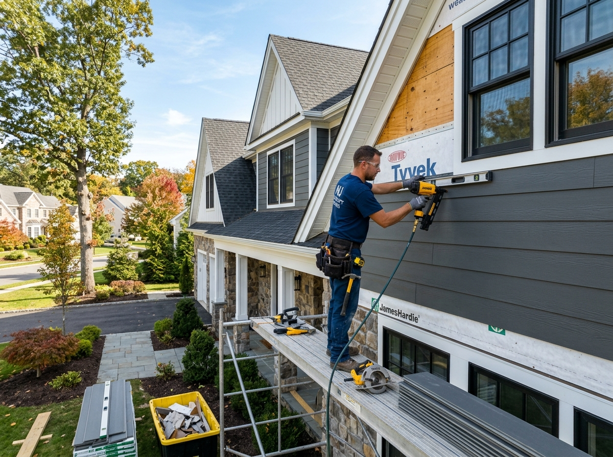
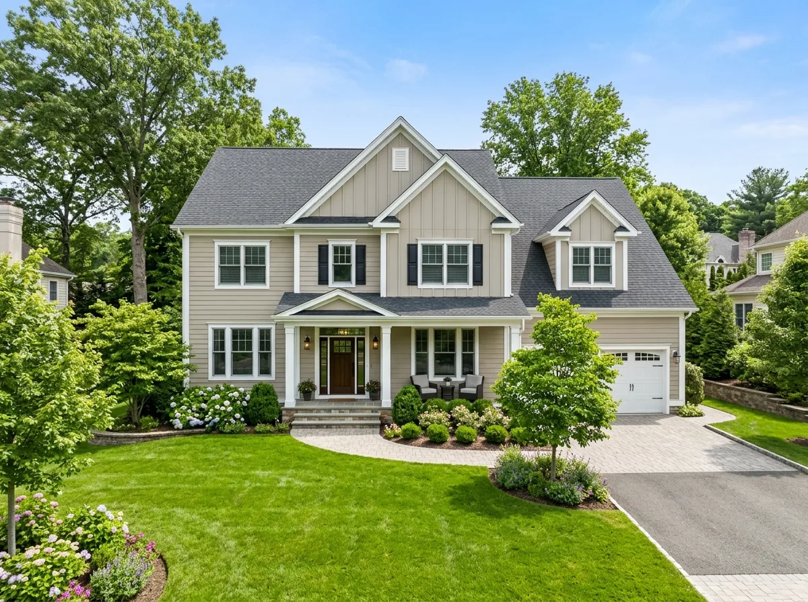
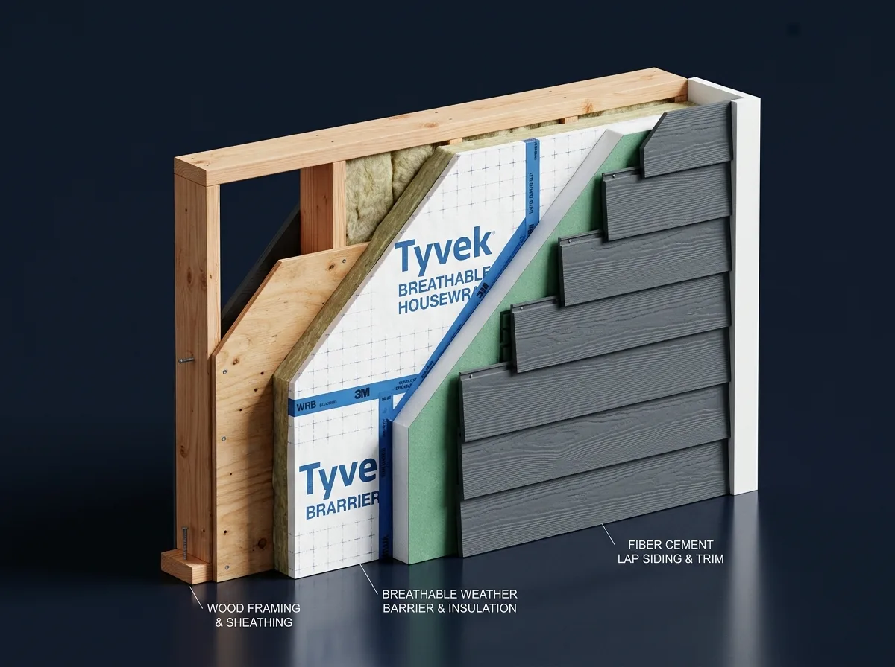
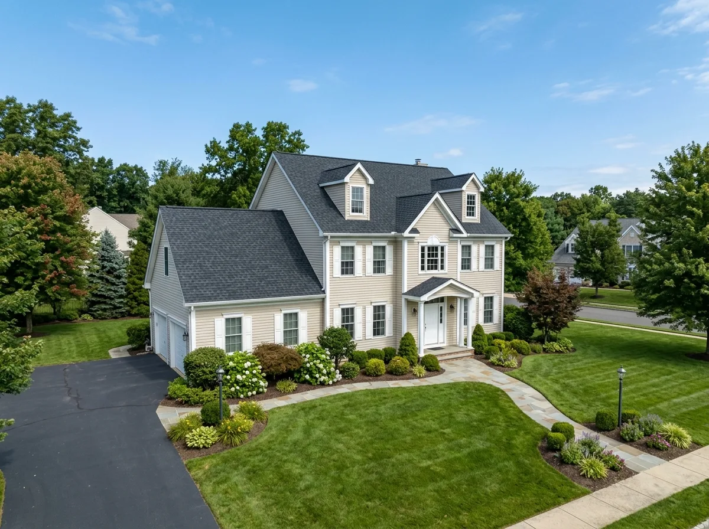

Siding Installation & Repair in Bridgewater, NJ
Transform your home's exterior protection and architectural beauty. Bridgewater Roofer provides precision siding installation and storm repairs featuring CertainTeed insulated vinyl, James Hardie® fiber cement, and custom aluminum trim coil capping across Somerset County.

Cracked, loose, or rotting siding exposing your home's sheathing?
Unzipped or cracked siding panels allow wind-driven rainwater to penetrate exterior wall cavities, rotting framing studs and breeding toxic mold.
Professional Siding Installation for Bridgewater Properties
Your home's siding is its outer shield against nor'easters, winter blizzards, and summer humidity. In Central New Jersey, dramatic seasonal temperature swings cause inferior siding to warp, buckle, and crack at fastener points.
Bridgewater Roofer delivers complete building envelope solutions. We don't just hang panels over aged wood; we strip failing materials down to the structural sheathing, inspect and replace compromised OSB/plywood, install breathable DuPont Tyvek® weather-resistive housewrap, and tape all window and door rough openings with waterproof flashing tape.
From CertainTeed Monogram insulated vinyl siding that adds continuous thermal R-value to James Hardie® Statement Collection fiber cement engineered for New Jersey freeze-thaw cycles (HardieZone® HZ5), our certified crews deliver flawless architectural finishes and 130 MPH wind defense.

Common Siding Problems We Resolve
Compromised siding allows moisture to rot wall framing undetected. Here are the primary exterior conditions our field crews repair:
Cracked or Blown Panels
Severe nor'easter wind gusts can unlock vinyl siding seams or snap aged brittle panels, exposing wood wall sheathing directly to rain.
Warped & Buckled Siding
Panels nailed too tightly into wall studs cannot expand during hot Central NJ summers, causing unsightly waves and popping seams.
Hidden Sheathing Rot
Missing window drip caps or torn housewrap channels moisture behind siding, rotting plywood decking and structural framing studs.
High Energy Bills & Drafts
Hollow uninsulated siding allows thermal bridging across wall studs, allowing expensive winter heat to escape and summer heat to penetrate.
Faded & Chalky Finish
Decades of intense UV sunlight break down color pigments, leaving a chalky white residue on vinyl or peeling paint on wood siding.
Loose Corner Posts & Trim
Gaps around corner posts, J-channels, and door casings allow hornets, mice, and driving rainwater into exterior wall cavities.
Woodpecker & Insect Holes
Wood and composite siding attract carpenter bees, termites, and woodpeckers that drill destructive holes into cedar boards and trim.
Sagging Soffit Panels
Water intrusion along eave edges rots sub-soffit framing, causing vinyl or aluminum soffits to droop and block attic airflow.
Where Siding & Wall Problems Develop
Click on common siding symptoms below to explore how vulnerabilities develop and how our certified siding crews resolve them.

Cracked, Unzipped, or Missing Siding Panels
High wind gusts can unlock vinyl siding seams or fracture panels. Prompt replacement prevents wind-driven rain from penetrating the wood wall sheathing behind.
Signs It May Be Time for New Siding
Exterior siding protects your interior structure and thermal insulation. Look for these clear warning signs on your home:
High Heating & Cooling Bills
Unexpectedly high energy bills often point to hollow, uninsulated siding allowing thermal loss through exterior wall studs.
Wavy or Buckling Panels
Siding runs that look warped or wavy have experienced thermal expansion failure, preventing proper weather sealing.
Interior Peeling Wallpaper
Moisture seeping through compromised siding travels into interior drywall, causing paint to bubble and wallpaper to peel.
Faded or Chalky Appearance
If running your hand across the siding leaves a powdery chalk residue, the protective UV clear coat has completely oxidized.
Soft or Rotting Wood Areas
Poking soft wood around corner posts, window sills, or trim boards reveals active wood-decay fungi requiring immediate replacement.
Rattling Panels in Wind
Clicking or rattling siding panels during windy days mean fastener nails have pulled loose from structural framing studs.
Woodpecker or Insect Holes
Holes drilled into wood siding by woodpeckers or carpenter bees allow moisture and nesting pests directly into wall cavities.
Frequent Repainting Needed
If wood siding requires repainting every 3 to 5 years, upgrading to maintenance-free fiber cement or insulated vinyl eliminates painting forever.
Siding Engineered for Central New Jersey Weather Swings
Bridgewater, NJ experiences the full spectrum of Mid-Atlantic weather—from sub-zero winter freeze-thaw cycles that crack inferior vinyl to 95°F summer heat with 85% relative humidity. Homes along the Watchung Mountains also endure fierce wind gusts up to 60 MPH during coastal nor'easters.
Inferior siding installations fail in New Jersey because contractors nail panels too tightly, preventing natural thermal expansion, or omit vapor-permeable weather barriers behind siding.
Bridgewater Roofer delivers complete architectural siding solutions. We install James Hardie® fiber cement engineered for Climate Zone 5 (HZ5) to resist freeze-thaw cracking, or CertainTeed Monogram premium insulated vinyl featuring heavy 0.046" thickness and TrueTexture™ woodgrain finish. Every installation includes DuPont Tyvek® housewrap and custom-formed aluminum trim capping for lifetime curb appeal.

Our 8-Step Siding Installation Process
We follow a meticulous craftsmanship protocol that ensures your home exterior is completely weatherproofed, insulated, and beautifully finished:
Exterior Wall Audit
We inspect existing siding, window casings, corner posts, and moisture levels across all elevations.
Careful Old Siding Teardown
Old siding and rusted fasteners are stripped down to the structural sheathing and hauled away cleanly.
Sheathing & Stud Repair
We inspect plywood/OSB sheathing for water rot, replacing damaged wood sheets with new CDX plywood.
Tyvek® Weather Barrier
We wrap the home in breathable DuPont Tyvek® housewrap, taping all seams and window flashing headers.
Corner Posts & Starter Strips
Laser-leveled starter strips, insulated corner posts, and z-flashing are secured with corrosion-proof nails.
Precision Course Installation
Siding courses are hung with proper thermal expansion clearances, ensuring straight, wind-locked panels.
Soffit, Fascia & Trim Capping
We custom-bend PVC-coated aluminum coil over wood fascia, window frames, and install vented soffits.
Final Walkthrough & Cleanup
We run multi-pass magnetic sweeps around driveways and lawns, review the work, and deliver your warranties.
Complete Siding & Exterior Trim Services
Explore our specialized siding installation and exterior architectural trim options:
CertainTeed Insulated Vinyl Siding
Monogram premium vinyl backed by contoured EPS foam insulation for maximum energy savings and dent resistance.
Insulated Vinyl →James Hardie® Fiber Cement
Non-combustible HardiePlank® lap siding engineered for NJ freeze-thaw cycles with baked-on ColorPlus® finishes.
James Hardie Guide →Cedar Shake Impressions
Authentic hand-split cedar shingle textures for gables, porticos, and accent walls without the wood rot upkeep.
Cedar Impressions →Vertical Board & Batten Siding
Soaring vertical elevation lines delivering modern farmhouse curb appeal in both vinyl and fiber cement.
Board & Batten →Aluminum Trim Coil Capping
Custom on-site brake bending of PVC-coated aluminum coil over wood window casings, rakes, and fascia boards.
Trim Capping Options →Vented Soffit Installation
Hidden-vent soffit systems that promote continuous intake attic ventilation and block insect entry.
Soffit Systems →Siding Storm Damage & Wind Repair
Targeted replacement of cracked, unzipped, or storm-damaged panels with color-matched manufacturer siding.
Storm Damage Repair →Exterior Wall Insulation Upgrades
High-density foam sheathing installation that eliminates thermal bridging and reduces summer air conditioning costs.
Insulation Upgrades →Siding Materials & Profiles We Install
Compare our premier exterior cladding materials engineered for beauty, durability, and energy efficiency:
Insulated Premium Vinyl Siding
CertainTeed Monogram premium vinyl siding backed by contoured EPS foam insulation. Eliminates thermal bridging across studs, resists 130 MPH winds, and never requires painting.
Key Installation Advantages:
- Rigid interlocking hem locks panels securely against nor’easters
- Contoured foam core resists impact from lawnmowers and hail
- Available in traditional clapboard and contemporary Dutch lap

Siding Repair or Complete Replacement?
Evaluating whether to patch damaged siding or replace the entire elevation depends on age, color fade, and underlying sheathing health:
Siding Repair May Be Appropriate When:
- ✔ Damage is confined to a few panels (e.g. fallen branch strike or minor hail).
- ✔ The siding is under 10–12 years old and matching manufacturer color lots exist.
- ✔ Underlying wood sheathing and housewrap remain completely dry and mold-free.
- ✔ A single corner post or J-channel trim piece has pulled loose and can be refastened.
Complete Siding Replacement Is Recommended When:
- ✔ Siding exceeds 20–25 years of age with widespread brittleness and chalking.
- ✔ Sun fade is severe, meaning any new replacement patch will stick out noticeably.
- ✔ You want to eliminate expensive repainting cycles by upgrading to James Hardie.
- ✔ You want to install contoured insulation backing to lower heating and cooling bills (compare performance in our standard vinyl vs. insulated siding comparison).
What Affects the Cost of Siding Installation?
Exterior siding estimates depend on square footage, architectural detail, and insulation upgrades. Here are the genuine technical factors:
Total Exterior Square Footage
Overall wall surface area (measured in roofing squares of 100 sq. ft.) minus window and door openings sets base material quantity.
Material Selection
Premium vinyl siding is the most cost-effective, while James Hardie fiber cement requires specialty diamond blades and heavier labor.
Home Height & Stories
Two- and three-story colonials with steep gable peaks require pump-jack scaffolding, staging planks, and specialized safety gear.
Old Siding Removal & Disposal
Tearing off old wood shakes, asbestos siding, or multiple layers of existing vinyl adds dumpster hauling and labor fees.
Underlying Sheathing Repairs
Replacing decayed or termite-damaged plywood sheathing and framing studs discovered during teardown requires carpentry labor.
Contoured Foam Insulation
Upgrading to contoured foam insulation backing adds thermal R-value and shock absorption against hail and lawn equipment.
Window & Door Trim Capping
Custom-bending aluminum trim coil around brickmold, window sills, and entryway door surrounds provides maintenance-free sealing.
Soffit & Fascia Scope
Replacing drooping wood overhangs with vented vinyl or aluminum soffits ensures proper airflow through the attic envelope.
Bridgewater Siding Code & Permit Guidelines
Under the New Jersey Uniform Construction Code (NJ UCC), residential siding replacement exceeding 25% of any exterior wall plane requires a municipal construction permit in Bridgewater Township. Minor localized panel repairs do not require permits.
Permits ensure that weather-resistive barriers (housewrap) meet fire spread and water penetration standards, and that flashing around electrical meters and gas penetrations is code-compliant. Bridgewater Roofer manages all permit applications directly with the Bridgewater Township Code Enforcement Department at 100 Commons Way, scheduling all required inspections.

Recent Siding Projects in Somerset County
Explore authentic siding replacements and exterior transformations completed by our certified crew across Bridgewater:

James Hardie Fiber Cement Transformation
Homeowner wanted to replace 30-year-old rotting cedar siding with maintenance-free materials. We installed HardiePlank® lap siding in Iron Gray with Arctic White trim boards and Tyvek HomeWrap weather barriers.

Insulated Vinyl Siding & Aluminum Trim Capping
Drafty walls and peeling paint caused high winter utility bills. We stripped old siding, repaired 6 rotted sheathing boards, wrapped the home in contoured foam-backed CertainTeed Monogram siding, and capped all trim in aluminum coil.
Interactive Before & After Comparison
Drag the slider handle to inspect the home exterior siding transformation.
 After (New Premium Siding & Trim)
After (New Premium Siding & Trim)
 Before (Aged Weathered Exterior)
Before (Aged Weathered Exterior)
Why Choose Us as Your Siding Contractor?
We combine manufacturer certifications with full building envelope carpentry to deliver lasting weather defense:
Certified Installation Crews
Our installers are certified by James Hardie and CertainTeed, ensuring every expansion gap and blind fastener meets warranty standards.
Complete Housewrap Barrier
We never install siding over bare wood. We wrap all wall surfaces in breathable DuPont Tyvek® housewrap with sealed window flashing tape.
10-Year Workmanship Warranty
Every full re-siding installation is backed by our 10-year dedicated workmanship guarantee plus manufacturer substrate warranties.
Custom Aluminum Trim Capping
Our carpenters custom-bend heavy aluminum coil over wood window frames, rakes, and fascia boards for 100% rot protection.
Structural Sheathing Repairs
We replace rotten plywood, sister damaged framing studs, and correct moisture intrusion before single siding panels are mounted.
Daily Site Cleanliness
We pick up all vinyl cutoffs, run high-power magnetic nail sweeps daily, and keep driveways accessible throughout your project.
What Customers Say About Our Siding Work
Read verified feedback from Bridgewater and Somerset County homeowners who transformed their homes with our siding services:
Related Exterior Services
Explore other specialized exterior solutions we deliver across Bridgewater Township:


Siding Services Across Bridgewater & Somerset County
Our exterior siding crews provide prompt on-site consultations, repairs, and complete re-siding throughout Somerset County:
Bridgewater, NJ
James Hardie fiber cement & CertainTeed insulated vinyl siding
Somerville, NJ
Historic Victorian restorations, cedar shake impressions & trim capping
Raritan, NJ
High-efficiency vinyl lap siding & maintenance-free aluminum trim
Martinsville, NJ
Wooded estate siding, James Hardie fiber cement & fire protection
Bound Brook, NJ
Moisture-resistant siding upgrades & Tyvek weather barrier wraps
Hillsborough, NJ
Suburban colonial full re-siding & vertical board and batten accents
Warren, NJ
Architectural fiber cement, custom frieze boards & window capping
Basking Ridge, NJ
Colonial cedar shake impressions & insulated siding wall envelopes
Bedminster, NJ
Estate siding restorations, James Hardie ColorPlus & vented soffits
Branchburg, NJ
Residential vinyl siding replacements & structural sheathing repairs
Manville, NJ
Storm damage siding panel replacements & affordable vinyl upgrades
Siding Installation & Repair FAQs
Find straightforward, expert answers to questions homeowners ask when planning siding installation in Bridgewater, NJ.
What is the best siding material for Bridgewater NJ homes?
Both insulated vinyl (such as CertainTeed Monogram) and James Hardie fiber cement are premier choices in Somerset County. Fiber cement offers authentic wood texture and non-combustible fire protection, while premium insulated vinyl provides high thermal R-value and zero painting maintenance.
Can you fix isolated wind-damaged or cracked siding panels?
Yes. Our repair crews handle localized wind tear-offs, fallen branch punctures, and warped siding panels without forcing a full house re-siding whenever manufacturer color matching is feasible.
Do you install housewrap moisture barriers behind new siding?
Always. We install breathable weather-resistive barriers (such as DuPont Tyvek HomeWrap) along with self-adhering flashing tape around all windows and door rough openings to eliminate draftiness and hidden wall rot.
Does new siding improve home energy efficiency?
Yes. Installing contoured EPS foam insulation backing behind vinyl siding boosts wall R-value, bridges thermal breaks across wall studs, and significantly lowers summer air conditioning and winter heating costs.
What architectural siding styles are available?
We offer traditional clapboard lap siding, Dutch lap, vertical board-and-batten, and staggered cedar-shake impressions for gables, porticos, and accent walls.
Do you install soffit and fascia trim capping?
Yes. We wrap existing wood fascia and rake boards in custom-bent PVC-coated aluminum trim coil and install vented hidden soffit panels for lifetime rot protection and proper attic intake ventilation.
Do I need a building permit to replace siding in Bridgewater NJ?
Under the New Jersey Uniform Construction Code (NJ UCC), residential siding replacement over more than 25% of an exterior wall requires a municipal construction permit in Bridgewater Township. Bridgewater Roofer handles all permit filings directly.
How long does a complete siding replacement project take?
A typical single-family home siding replacement in Bridgewater requires 4 to 7 working days, including old siding removal, sheathing inspection, housewrap installation, and precision trim capping.
How much does new siding cost in Bridgewater, NJ?
Premium vinyl siding typically ranges from $7 to $12 per square foot installed, while James Hardie fiber cement siding ranges from $12 to $19 per square foot. Average home investments range from $12,000 to $28,000 depending on home size and trim details.
What warranty comes with your siding installations?
We provide a 10-year workmanship installation warranty, backed by manufacturer lifetime limited transferable warranties on vinyl products and a 30-year non-prorated substrate warranty from James Hardie.
Helpful Siding & Exterior Resources
Learn more about maintaining your home's exterior cladding and preventing moisture damage:

Bridgewater Exterior Permit Guide
Municipal UCC permit regulations for exterior alterations, siding replacements, and inspections in Somerset County.
Read Permit Guide →
Post-Storm Roof & Siding Inspection Checklist
How to spot unzipped vinyl siding panels, cracked corner posts, and hidden water infiltration after severe nor'easters.
Read Storm Checklist →
Standard Vinyl vs. Insulated Siding in NJ
Compare thermal R-value performance, exterior sound reduction, and installation costs for Somerset County homes.
Read Siding Guide →Need Siding Installation or Repair in Bridgewater?
Upgrade your home's weather protection, thermal efficiency, and architectural curb appeal. Speak directly with a licensed Bridgewater contractor about James Hardie fiber cement, CertainTeed insulated vinyl, and aluminum trim capping.